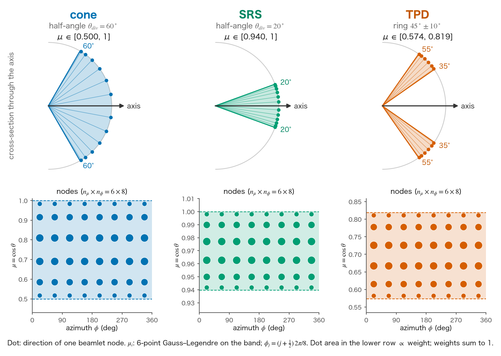
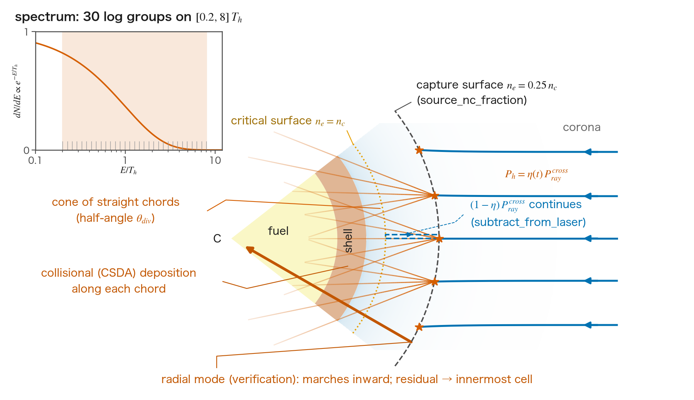

Hot electrons reference
TENRYU implements a prescribed preheat model for hot electrons driven by laser–plasma instabilities (such as TPD and SRS within LPI), in the style of Colaïtis et al. [1] and of LILAC, the 1D hydrocode of the Laboratory for Laser Energetics (LLE, University of Rochester, USA). The calculation is a chain of laser-power capture, a 3D Maxwellian emission spectrum, cone quadrature, transport along straight chords, collisional slowing-down, and energy deposition in the material. It is not a self-consistent solution of instability wave growth or saturation: the hot-electron temperature is a calibration input, and the conversion efficiency η(t) is either a calibration input or the output of a reduced closure. Terms specific to this calculation are defined in the terms section.
Physical mechanism
Above intensity thresholds, laser-driven parametric instabilities — two-plasmon decay (TPD) and stimulated Raman scattering (SRS) — drive large-amplitude electron plasma waves. The instabilities occur mainly near the quarter-critical density because there a daughter electron plasma wave oscillates at about half the laser frequency, which is where the TPD and SRS frequency-matching conditions can be satisfied. The driven plasma waves trap and accelerate electrons to tens or hundreds of keV, far beyond the thermal bulk. Because their range is much longer than a thermal electron's, they penetrate the shell ahead of the shock and preheat the fuel, raising its adiabat and degrading compression. Quantifying that preheat is the purpose of this physics kernel.
These instabilities grow and saturate on kinetic scales. TENRYU prescribes the hot-electron temperature \(T_h\) (T_hot_eV) and uses a calibrated conversion efficiency η(t) or a reduced closure driven by local plasma conditions. The capture rule sets the source location and the laser power available for conversion.
Analytic moments of the default 3D Maxwellian give each logarithmic group's power weight \(W_g\) and power-weighted mean energy. The differences of the moments at adjacent group edges telescope, so \(\sum_g W_g=1\) to rounding. In default 1D cone transport, solid-angle quadrature supplies the candidates from which the code samples one chord per group.
In 1D, continuous slowing-down reduces the electron kinetic energy along its path. Collisional angular scattering reduces the mean projection of the path along the chord, so the same energy loss covers less distance along the chord. The outer sheath models reflux by returning the fraction of electrons that does not escape. A finite time budget lets the electrons in flight continue into later time steps. The energy ledger accounts for deposition, escape, unresolved energy, and the change in energy in flight.
Model scope and source
Set Laser.hot_electron.enable=True to activate the model. In raytrace_2d, each inward ray can supply a source at its first upward crossing of \(n_e=f_s n_c\). The density fraction \(f_s\) defaults to 0.25 in the scalar shorthand (source_nc_fraction). On ordinary segments, the code splits the segment at the crossing and applies the upstream inverse-bremsstrahlung (IB) absorption before capture. In the segment where the ray reaches the critical density, capture uses the segment-entry power. The tail closure then uses the remaining power. In radial_absorption_1d, the first cell whose midpoint has \(n_e/n_c\) at least \(f_s\) supplies a radially inward source at its outer face with the power entering that cell.
\(P_{h,ray}(t)\) is the power converted from one ray at time \(t\), η(t) is the conversion efficiency, and \(P_{ray}^{cross}\) is the power selected by the capture rule above. With cross-beam energy transfer (CBET), the initial trace and each replay apply depletion at the capture event. That event has the optical depth to the crossing on ordinary segments and zero optical depth from the entrance on a critical-crossing segment. The final replay supplies transport with the capture records, summed in port order per reference ray, with the crossing radius and direction. Coexistence requires cbet.geometry_mode="port_section" and eta_mode="model".
The efficiency η(t) can be supplied in four ways. For the scalar shorthand, eta_hot gives a constant and eta_hot_table gives a time table frozen during initialization. A sources list defines up to four mechanism-resolved cone, TPD, or SRS channels, each with its own capture surface, constant or tabulated η, temperature, spectral window, and angular band. Multiple channels fire in ascending \(f_s\) order and deplete the laser sequentially when depletion is enabled. Finally, eta_mode="model" evolves η from local plasma conditions. All four are reduced prescriptions for generation; none turns this feature into a self-consistent instability solver.
In a 1D run, this choice of efficiency prescription (eta_mode) combines with two other modeling axes: the transport tracking mode (tracking: default "time_dependent" advances flight across time steps and retains in-flight electrons, whereas "adiabatic" slows electrons to completion within one step) and the angular model (angular_model: default "cone" transports chords over the angular band, whereas "radial" marches a single radial line for verification).
Multigroup spectrum and cone angles
$$ \frac{d\dot N}{dE}=C(E/T_h)^\alpha e^{-E/T_h},\qquad \alpha=\begin{cases}\tfrac12&\texttt{maxwellian_3d},\\0&\texttt{exponential},\end{cases} $$\(\dot N\) is the number of emitted electrons per unit time, \(E\) is electron energy, \(T_h\) is the spectrum temperature, \(\alpha\) sets the spectrum shape, and \(C\) is the normalization constant. All mechanisms and the scalar shorthand default to spectrum="maxwellian_3d" (3D Maxwellian); "exponential" selects an exponential spectrum.
\(T_h\) is the temperature converted from T_hot_eV in eV to erg using eV_to_erg; \(E_{min}\) and \(E_{max}\) are the lower and upper emission-window edges. \(\dot N\) is the number of emitted electrons per unit time, \(E\) is electron energy, and \(P_h\) is the channel hot-electron power. The constant \(C\) normalizes the emission so that the power integrated over the window is \(P_h\).
The default temperatures (TPD 60 keV, SRS 45 keV, and cone 50 keV) correspond to inferences made with a 3D Maxwellian (Christopherson et al. [9] and Solodov et al. [10]). Each temperature is paired with the spectrum shape used to infer it (Barlow et al. [11]). Relativistic spectra are omitted for the same reason.
$$ \begin{aligned} {[E_{min},E_{max}]}&=[\texttt{E_min_over_Th}T_h,\texttt{E_max_over_Th}T_h],\\ E_{edge,g}&=E_{min}(E_{max}/E_{min})^{g/N_E},\quad g=0,\ldots,N_E. \end{aligned} $$\(E_{min}\) and \(E_{max}\) are the window edges, \(T_h\) is the spectrum temperature, \(N_E\) is n_energy_groups (default 50), \(g\) indexes the edges, and \(E_{edge,g}\) is the edge energy. The inputs E_min_over_Th and E_max_over_Th are the lower and upper window edges divided by \(T_h\). These edges divide the window into logarithmic groups.
\(w=E/T_h\) is the dimensionless energy \(E\) divided by temperature \(T_h\), and \(\alpha\) is the spectrum exponent. \(\Gamma(s,w)\) is the upper incomplete gamma function of order \(s\) with lower limit \(w=E/T_h\); \(\psi_1\) and \(\psi_2\) supply the first and second energy moments, respectively. The two spectra have the following closed forms.
$$ \begin{aligned} \alpha=0:\quad &\psi_1(w)=(1+w)e^{-w},\\ &\psi_2(w)=(2+2w+w^2)e^{-w}. \end{aligned} $$\(\alpha=0\) denotes the exponential spectrum, \(w=E/T_h\) is dimensionless energy, and \(\psi_1\) and \(\psi_2\) are the first- and second-moment functions.
$$ \begin{aligned} \alpha=\tfrac12:\quad &\psi_1(w)=\tfrac34\sqrt\pi\,\operatorname{erfc}(\sqrt w) +e^{-w}\sqrt w(\tfrac32+w),\\ &\psi_2(w)=\tfrac{15}{8}\sqrt\pi\,\operatorname{erfc}(\sqrt w) +e^{-w}\sqrt w\bigl(\tfrac{15}{4}+w(\tfrac52+w)\bigr). \end{aligned} $$\(\alpha=1/2\) denotes the 3D Maxwellian, \(w=E/T_h\) is dimensionless energy, \(\psi_1\) and \(\psi_2\) are the first- and second-moment functions, \(\operatorname{erfc}\) is the complementary error function, and \(\pi\) is the circle constant.
$$ \begin{aligned} W_g&=\frac{\psi_1(w_{lo})-\psi_1(w_{hi})}{\psi_1(w_{min})-\psi_1(w_{max})},\\ E_g&=T_h\frac{\psi_2(w_{lo})-\psi_2(w_{hi})}{\psi_1(w_{lo})-\psi_1(w_{hi})}. \end{aligned} $$\(W_g\) is the power weight of group \(g\), \(E_g\) is its power-weighted mean energy, and \(T_h\) is the spectrum temperature. The values \(w_{lo}\) and \(w_{hi}\) are the group edges, and \(w_{min}\) and \(w_{max}\) are the window edges, all divided by \(T_h\); \(\psi_1\) and \(\psi_2\) are the moment functions above.
Each weight is a difference of the same function at group edges, so intermediate terms cancel in the sum and \(\sum_g W_g=1\) follows without numerical quadrature. In floating-point arithmetic, the sum equals 1 to rounding. For a chord of power \(P\) shared among all energy groups, group \(g\) represents \(P W_g/E_g\) electrons per second. In time-dependent 1D cone transport, the same rate formula uses the total candidate power for \(P\) and assigns each group to its sampled trajectory.
The default window is \([0.2,8]T_h\). The power fraction outside it is about 1.15% for the 3D Maxwellian and 2.05% for the exponential; this power is renormalized into the window groups rather than discarded.
Input validation applies to both spectra in the scalar shorthand and in each channel. The namelist builder rejects inputs that violate the following conditions with a ValueError.
T_hot_eVmust be at least 1 eV to avoid underflow of the exponential group moments in erg units.E_max_over_Thmust exceedE_min_over_Thand be at most 600 to avoid underflow of the group integrals.E_min_over_Thmust be positive.- The logarithmic group width must satisfy \(\ln(\texttt{E_max_over_Th}/\texttt{E_min_over_Th})/\texttt{n_energy_groups}\ge2^{-16}\) to keep the group edges from becoming too close.
- At small dimensionless energies or in narrow groups, the closed forms subtract nearly equal values and suffer cancellation. Window and group-count combinations estimated to lose more than 26 bits in the group integrals are rejected. The same check rejects cases where the integral lower bound used for that estimate, or a value of the moment functions \(\psi_1\) or \(\psi_2\), is zero or nonfinite, making the accuracy loss impossible to evaluate.
The source power and the directions are handled as follows.
- The source uses the capture rule for the selected laser path.
- Cone quadrature uses Gauss–Legendre nodes in \(\mu\) and uniform nodes in \(\phi\). The weights sum to one and define the candidates for default 1D cone emission.
- The default capture surface is the quarter-critical density, \(f_s=\texttt{source_nc_fraction}=0.25\).
- With
subtract_from_laser=True, \((1-\eta)P^{cross}\) continues down the laser path. WithFalse, the laser continues with its full capture-point power.
For a cone, the ray direction is the axis, and theta_div_deg sets the half-angle. The polar cosine uses n_mu Gauss–Legendre points and the azimuth uses n_phi equally spaced points. Increasing the half-angle changes the set of candidate chords and their traversed areal densities. The radial verification mode marches inward along a single radial line. The terms section gives the bands for TPD and SRS.
Terms used in this calculation
The energy that hot electrons deposit in a cell depends strongly on the radius where an electron starts, the direction in which it starts, and its energy. A 1D fluid calculation carries only radial profiles, so TENRYU divides the power carried by the rays into sources, directions, and energy groups and hands these to a transport calculation for the electrons. The words used for this division carry meanings specific to TENRYU's implementation, so they are defined here together. On this page, the energy that hot electrons give to a cell is called deposition, and the energy that enters a cell through absorption of laser light is called laser deposition.
Capture surface and source
The capture surface is \(n_e=f_s n_c\), where the electron density is a fraction \(f_s\) of the laser critical density \(n_c\). The first upward crossing of this surface along a ray is its crossing point. Capture converts the fraction η of \(P_{ray}^{cross}\), the power specified by the capture rule. With subtract_from_laser=True, the remaining \((1-\eta)P_{ray}^{cross}\) continues. With False, the original power continues. The capture operation represents generation through a prescribed efficiency or a reduced closure.
The density fraction \(f_s\) is set by source_nc_fraction in the scalar shorthand and by capture_nc_fraction in a channel (the range of both is above 0 and at most 1). The default is 0.25, the quarter-critical density; SRS channels default to 0.20 with eta_mode="model" and 0.18 with "legacy". \(f_s\) determines the power that is absorbed upstream before a ray reaches the surface and the radius from which the electrons start.
A source is the combination of position, axis direction, and power from which hot electrons start. The position is the radius \(r_s\) of the crossing point; the axis direction is the cosine \(\mu_{axis}\) of the angle between the ray direction at the crossing point and the outward radial direction (\(-1\) for a radially inward ray); and the power is \(P_h=\eta P^{cross}_{ray}\). One ray makes at most one source per channel. The transport calculation takes as its unit the sources that fell into the same bin, merged into one.
Bin
A bin is a set of sources grouped by the cell that contains the source and an interval of \(\mu_{axis}\). The bin is fixed by which of the 16 equal intervals (width 0.125) of \(\mu_{axis}\in[-1,1]\) the source falls in, and by the hydrodynamic cell that contains \(r_s\). A source outside the mesh is put into the bin of the nearest end cell. A bin with zero power is not created. For each bin, one source is made with the following quantities.
$$ P=\sum_k P_k,\qquad r_s=\frac{1}{P}\sum_k P_k\,r_{s,k},\qquad \mu_{axis}=\frac{1}{P}\sum_k P_k\,\mu_{axis,k}. $$Here \(P\), \(r_s\), and \(\mu_{axis}\) are the power, radius, and direction cosine of the merged source. \(k\) indexes the sources in the bin, and \(P_k\), \(r_{s,k}\), and \(\mu_{axis,k}\) are the power, radius, and direction cosine of source \(k\). Transport starts from these mean values, so the launch point is never snapped to a cell face. Bins are processed in ascending (cell, interval) order, so the order is the same in every run.
The number of bins, 16, is a constant (kAxisBins in the code), not a namelist key, and cannot be changed. Bins decouple the cost of transport from the number of rays. A 1D beam launches 1000 rays by default (Laser.rays_per_beam), and transporting every crossing point would make the cost proportional to the number of rays. With bins, at most (number of cells) × 16 sources are transported per channel, independent of the number of rays. The price is that the rays of one bin are bundled into one mean direction, so the spread of the direction cosine survives only at a resolution of 0.125.
In 2D RZ the source direction is three-dimensional, so the bins are cut differently. Within each cell, the meridional direction \(\chi=\operatorname{atan2}(k_R,k_Z)\) is divided into 16 equal intervals of \([-\pi,\pi]\) (kChiBins in the code), and the azimuthal component \(|k_\phi|\) is divided into two classes, below 0.3 and at or above 0.3, giving 32 bins per cell. Here \(k_R\), \(k_\phi\), and \(k_Z\) are the radial, azimuthal, and axial components of the unit vector of the ray direction. The source of each bin has the power-weighted mean position and direction (the direction is normalized to a unit vector).
Electron beamlets
An electron beamlet is a weighted group of electrons moving on one chord with initial energy \(E_g\), the representative energy of group \(g\). In 1D cone transport with tracking="adiabatic", each binned source contributes one beamlet per propagating angular node and energy group. In planar geometry, directions within the plane deposit directly in a non-void source cell in this mode. Its power is \(P\,w\,W_g\), where \(P\) is the binned source power, \(w\) the angular weight, and \(W_g\) the group weight. The default counts n_mu=6, n_phi=8, and n_energy_groups=50 give 2400 per bin when all nodes contribute. The radial mode uses one beamlet per group from the outermost source with the channel's combined power.
In the default tracking="time_dependent" cone mode, live electron populations are retained across hydrodynamic steps, so transporting every bin–angle–group beamlet would multiply both memory and transport cost. Instead, the code pools candidate chords across the channel's bins and, for each energy group, uses a seeded Philox draw to pick a single chord in proportion to its power. The selected chord receives the group's share of the total candidate power and becomes one tracking row (the time-dependent counterpart of a beamlet). A channel with candidates therefore creates 50 tracking rows at the default group count. The GPU adds deposition to cell-wise fixed-point accumulators.
Channels and angular bands
A channel is one element of Laser.hot_electron.sources and represents one mechanism that makes hot electrons. The mechanism (mechanism) is "cone", "tpd", or "srs", and up to four channels can be given. Each channel has its own capture surface (capture_nc_fraction), conversion efficiency (eta or eta_table; with eta_mode="model" the model supplies it), temperature (T_hot_eV), spectral window, and angular band. Rays travel inward from the outside, so they pass the channels in order of increasing capture-surface density, and when enabled, ray depletion is applied in ascending \(f_s\). Channels with equal \(f_s\) follow the order in which they are written in sources. The density, temperature, and angular distribution of the hot electrons differ between mechanisms; channels let these differences be given separately, as calibration inputs of each mechanism.
The scalar shorthand specifies a single cone channel without sources, through the keys directly under Laser.hot_electron (source_nc_fraction, eta_hot, eta_hot_table, T_hot_eV, spectrum, n_energy_groups, E_min_over_Th, E_max_over_Th, theta_div_deg, n_mu, n_phi); the error messages use the same name. These keys cannot be combined with sources, and doing so is an error.
An angular band is the range of directions in which electrons are emitted around the axis of the source, which is the ray direction at the crossing point. It is given by the range of the cosine \(\mu\) of the polar angle from the axis and by the azimuth \(\phi\) about the axis, over which it is uniform. Directions in the band are weighted uniformly in solid angle and represented by nodes: an n_mu-point Gauss–Legendre rule in \(\mu\) and n_phi equally spaced points in \(\phi\), with weights that sum to one. The cosine \(\mu_{dir}\) between the direction of a node and the radial direction is given by the following expression.
Here \(\mu_{dir}\) is the node's radial cosine, \(\mu\) is its polar cosine relative to the source axis, \(\mu_{axis}\) is the radial cosine of that axis, and \(\phi\) is the azimuth about it. The nodes specify candidate directions in time-dependent cone transport. The bands and defaults of each mechanism are given in the table. Figure A shows the bands and the nodes.
| Mechanism | Angular band (range of \(\mu\)) | Default \(f_s\) | Default \(T_h\) |
|---|---|---|---|
"cone" | \(\cos\theta_{div}\le\mu\le1\) (cone). \(\theta_{div}\) is theta_div_deg (default 60°). | 0.25 | 50 keV (T_hot_eV = 5.0e4) |
"srs" | The same expression (a narrow forward cone). The default of theta_div_deg is 20°. | 0.20 ("model"), 0.18 ("legacy") | 45 keV (4.5e4) |
"tpd" | \(\cos(\theta_c+\Delta)\le\mu\le\cos(\max(0,\theta_c-\Delta))\). \(\theta_c\) is tpd_theta_deg (default 22.5°), and \(\Delta\) is tpd_delta_deg (default 22.5°). The default is a filled cone within 45° of the capture axis, uniform in solid angle. | 0.25 | 60 keV (6.0e4) |

tpd_theta_deg=45 and tpd_delta_deg=10. Top: cross-section through the source axis (the ray direction at the crossing point, arrow). The colored sectors are the bands: the cone has half-angle \(60^\circ\), SRS half-angle \(20^\circ\), and TPD is the section of a ring from \(35^\circ\) to \(55^\circ\) off the axis. Lines and dots illustrate the polar angles of the \(n_\mu=6\) Gauss–Legendre nodes \(\mu_i\) in a section through the axis. Bottom: all \(6\times8=48\) nodes in the plane of azimuth \(\phi_j=(j+\tfrac12)\,2\pi/n_\phi\) (\(n_\phi=8\)) and \(\mu\). Dashed lines are the band limits, dot area is proportional to the weight \(w\), and the weights sum to 1. The vertical range is scaled to the band of each mechanism. \(\mu\) is the cosine of the polar angle from the source axis; the cosine \(\mu_{dir}\) with the radial direction follows from the expression above.The defaults are calibration inputs of each mechanism; the literature behind them is [2]–[4] for TPD and [5]–[7] for SRS (a table is in docs/NUMERICS.md §5.11.1 of the repository). The default TPD angular band is the filled cone \([\cos45^\circ,1]\) about the capture axis, following Colaïtis et al. [1] and Barlow et al. [11]. The TPD defaults give \(\theta_c-\Delta=0\), so the upper direction-cosine limit of the angular band is \(\mu_{hi}=1\). Other settings with \(\theta_c-\Delta>0\) give a ring. A 1D calculation cannot resolve the azimuth, so the azimuthal average of two lobes is represented by a ring. For \(\theta_c-\Delta\le0\), the band is a cone of half-angle \(\theta_c+\Delta\). A cone with \(\theta_{div}=0\) has only the single direction of the axis, and a ring with \(\Delta=0\) has only the \(n_\phi\) azimuthal nodes.
The key angular_model is a choice common to all channels. "cone" transports the electrons along chords selected from the angular band above, and "radial" is a verification mode that marches only the single direction \(\mu=1\) inward from the outermost source, which collects the whole power of the channel. The mechanism name "cone" denotes a type of channel and is separate from the value of angular_model.
Chords and pericenter
A chord is the straight line used to project electron transport. In spherical geometry, its intersections with shell faces partition the chord into cell segments. The mean projection along the chord changes through scattering, as described under range shortening.
The pericenter is the point where a chord comes closest to the center of the sphere. For a source at radius \(r_s\) and a chord whose direction has the cosine \(\mu_{dir}\) with the radial direction, the pericenter radius, which equals the distance between the chord and the center, is given by the following expression.
$$ r_{peri}=r_s\sqrt{1-\mu_{dir}^2}. $$Here \(r_{peri}\) is the pericenter radius, \(r_s\) is the source radius, and \(\mu_{dir}\) is the cosine of the angle between the chord direction and the local outward radial direction at launch. An inward chord first approaches the pericenter and then travels outward. The pericenter cell is split into inward and outward segments. In 1D cone transport, electrons can start a new chord at a boundary reflection.
Rows and history store
A row is the tracking unit for one electron population in the history table; it stores the current kinetic energy per electron (initially the representative group energy), along with the electron number, trajectory, age since emission, logarithmic mean cosine, and random-number position. The code advances a row until completion or exhaustion of its current time budget. A live row retains positive energy and electron number.
The history store holds live rows between steps. At the next step, transport locates moving rows on the current mesh, whereas a local row — one that has reached the orientation floor below and remains in a single cell — keeps its cell index without relocating. Rows launched in the same step form a cohort for reuse. When the store reaches history_capacity (default 16777216 rows), the code does not discard old electrons; instead it completes a selected cohort immediately with an unlimited time budget (forced adiabatic completion) to free slots while conserving energy. history_reuse="oldest" selects the oldest cohorts first, whereas "fewest" selects the smallest live cohorts first, breaking ties by age.
Orientation floor
The orientation floor is the fixed lower bound −20 on the logarithm of the mean direction cosine. Because exp(−20) ≈ 2 × 10−9, scattering has effectively isotropized the electrons and their net speed along the chord vanishes. In finite-budget tracking, a row that reaches this bound continues slowing down in its cell without progressing along the chord. With an unlimited budget, the energy still carried by the row is deposited in that cell. The floor applies when range_shortening=True, the default.
Pass and unresolved energy
A pass begins at the outer face after reflection and ends at the next arrival at that face. A lossless pass is one in which the applied stopping power and scattering coefficient are zero in every traversed cell (in production runs with range shortening enabled, only passes traversing void cells exclusively). Transport can advance lossless specular passes in a batch and can combine eligible specular passes in an unlimited-budget calculation.
Unresolved energy is energy that cannot be resolved to boundary escape or cell deposition. It includes energy remaining in an unlimited-budget calculation along a lossless specular trajectory with zero escape fraction, or in specular passes whose losses fall below the pass-combination range. sheath_unresolved_limit defaults to 1e-3 and caps this energy per channel as a fraction of new injection plus energy in flight at the start of the step.
Ghost corona
The ghost corona (key Laser.lasermesh.ghost_corona) is a synthetic low-density profile outside the outermost hydrodynamic cell that only the ray trace uses. When the fluid's initial condition is a sharp solid–vacuum interface with no preplasma, laser absorption concentrates in the outermost solid cell and causes unphysical heating and numerical instability. To avoid this, a band in which the electron density falls off exponentially outward from the value of the outermost hydrodynamic cell is placed only on the LaserMesh, the grid the rays travel through (LaserMesh1D and the ray march). The density range is 0.03 to 0.99 times \(n_c\) (the defaults of ne_min_frac and ne_max_frac), and the hydrodynamic density, temperature, and charge state are not changed. Only the 1D_SPH LaserMesh uses it, and it is disabled by default (enabled=False).
A ray can cross the capture surface in the ghost corona, outside the hydrodynamic mesh. This source is put into the bin of the outermost cell, and its count and power are reported in a warning.
Straight-line transport and deposition

Figure B shows generation, propagation, and deposition on the initial chords. Analytic intersections with shell faces divide a spherical chord into inward, pericenter, and outward segments. For a launch inside the mesh, the first segment starts at the launch point. With density and temperatures held fixed within a cell, the transport integrates collisional energy loss in the continuous slowing-down approximation (CSDA), using the relativistic electron speed.
$$ \Delta P_{i,g}=\dot N_g\left(E_{in}-E_{out}\right). $$For a steady beamlet, \(\Delta P_{i,g}\) is the power deposited in cell \(i\) by energy group \(g\), and \(\dot N_g\) is the electron rate in that group. The energies \(E_{in}\) and \(E_{out}\) are the kinetic energies at entry and exit of the update. In 1D, a row with \(N\) electrons deposits energy \(N(E_{in}-E_{out})\), where \(N\) is the current row weight in electrons.
$$ E_{\rm floor}=\max(2T_e,10^{-3}T_h). $$\(E_{\rm floor}\) is the thermalization floor, \(T_e\) is the cell electron temperature, and \(T_h\) is the channel spectrum temperature. All three are in erg. At the floor in matter the remaining energy is deposited locally. In vacuum, the code advances flight before checking the floor. When an update crosses the floor in matter, Simpson's rule closes the flight time and the deposition-weighted flight-time numerator (first time moment of deposition) if the stopping powers at the entry, midpoint, and floor are positive.
At the inner boundary in radial mode, inner_bc="deposit_residual" deposits the remaining energy in the innermost non-void cell. "escape" books the remainder as escaped energy.
Stopping model
Laser.hot_electron.stopping_model defaults to "free_and_bound_electrons" in 1D. It includes free- and bound-electron stopping and collective excitation. "free_electrons" selects the free-electron model.
Bound-electron stopping and range shortening both require positive Z for every non-void material. If a composition is supplied, its atom-fraction-weighted mean nuclear charge must match Z within relative 1e-3. Range shortening warns when an element of the composition, or the material Z if no composition is supplied, exceeds 13. For bound-electron stopping the parser resolves the neutral material's mean excitation energy from an explicit value, the elemental table, or the elemental composition.
For the model with bound electrons, the mass stopping power is
$$ S_m(T)=\frac{4\pi e^4}{\rho m_e v^2} \left[n_f\max(0,G(x))\max(2,L_f)+n_bL_b\right]. $$\(S_m\) is the mass stopping power [erg cm²/g], \(T\) is the kinetic energy [erg], \(e\) is the elementary charge, \(m_e\) is the electron mass, \(v\) is the relativistic electron speed, and \(\rho\) is the mass density. \(n_f\) and \(n_b\) are the free- and bound-electron number densities. \(G(x)\) accounts for the thermal motion of background electrons, with \(x^2=m_ev^2/(2T_e)\) and electron temperature \(T_e\) in erg. The free-electron term is zero for a nonpositive electron temperature or free-electron number density. \(L_f\) is the free-electron stopping number for close collisions and collective excitation. \(L_b\) is the bound-electron stopping number after applying a floor of 2.
$$ n_f=\frac{\rho\max(\bar Z,0)}{A_{\rm eff}m_p},\qquad n_b=\frac{\rho\max(Z_{\rm nuc}-\max(\bar Z,0),0)}{A_{\rm eff}m_p}. $$\(n_f\) and \(n_b\) are the free- and bound-electron number densities, \(\rho\) is the mass density, \(\bar Z\) is the mean ionization, \(Z_{\rm nuc}\) is the nuclear charge number, \(m_p\) is the proton mass, and \(A_{\rm eff}\) is the effective mass number. Both 1D stopping models use the state's volume-fraction-weighted harmonic mean mass number over non-void materials.
Range shortening
With range_shortening=True, both 1D stopping models use the mean cosine of the scattering angle in cone and radial transport. The first Legendre moment in Solodov and Betti [16, Eq. (13)] yields the mean direction cosine in their Eq. (15). TENRYU also uses the logarithm of this cosine.
\(\theta\) is the angular deviation from the chord, \(s\) is the distance traveled along the electron path, \(s'\) is the integration variable, \(k_1\) is the first-moment scattering coefficient per unit path length, and \(l\) is the logarithm of the mean direction cosine. A row starts with mean cosine one. The code advances the projected distance at the electron speed multiplied by the mean cosine. The crossed areal density along the chord is therefore smaller than the areal density along the electron path. The orientation floor governs the transition to local deposition. For the penetration-depth integral in Eq. (23) of [16], the authors give two choices for the terminal energy. One is \(3T_e/2\), where \(T_e\) is the background electron temperature. The other uses the energy at which the mean cosine reaches \(1/e\).
For range shortening, the code builds cell-wise tables of the mass stopping power and the mass scattering coefficient (the scattering coefficient divided by density). The tables use spacing \(1/64\) in the natural logarithm of energy and store precomputed interpolation records for each tabulated energy interval. Within the table energy range and up to an electron temperature of 20 keV, eligible cell crossings use those records for fast traversal. Outside the table, above 20 keV, or in substeps where the fast-crossing conditions do not hold, the code holds the coefficients fixed at the start of each substep (evaluating them directly outside the table or above 20 keV). Without range shortening, classical fourth-order Runge–Kutta integrates with directly evaluated stopping.
Sheath and boundary reflection
When a 1D cone row reaches a sheath, the fraction set by sheath_escape_fraction leaves with the arriving energy per electron. The row that remains reflects. The code draws a direction uniformly in solid angle within sheath_deviation_deg of the specular direction and folds any outward direction back into the mesh. The defaults are zero escape and a 5° half-angle. At the planar inner face, "symmetry" reflects specularly without escape, "sheath" uses the same escape and reflection rules as the outer sheath, and "outflow" lets the entire row escape.
In finite-budget tracking, lossless specular passes can be advanced in a batch within the remaining time budget, accounting at once for the electron weight lost at each sheath encounter. With an unlimited budget, specular passes can be combined when the escape fraction is below 1 and any planar inner face reflects, with bounds on the energy and orientation changes in each combined update. For a lossless specular pass with an unlimited budget, the remainder is booked as escaped if the escape fraction is positive and as unresolved energy if it is zero.
From capture to heating, step by step
The following sequence describes 1D transport.
- Capture power. Apply the capture rule for the laser path. Captures in the ghost corona are assigned to the outermost cell's bins and reported.
- Group sources. Make bins by cell and direction-cosine interval. Retain the power-weighted radius and direction in each bin.
- Create tracking rows. Form logarithmic energy groups and candidate chords. The default time-dependent cone mode draws one chord per group per eligible channel. Allocate space for the new rows. If new rows alone exceed
history_capacity, stop with an error. Otherwise free space by finishing selected existing cohorts immediately with an unlimited budget (forced completion) according tohistory_reuse. - Advance the rows. Resume stored rows and advance new ones through cell segments. Each
time_dependentrow has a budget of one hydrodynamic time step.adiabaticand forced completion use an unlimited budget. Advance surviving rows even when the laser stops delivering power. The limit on substeps in a 1D cell segment is $$ N_{\rm cap}=\left\lceil\frac{\ln(1000 E_{max}/T_h)}{0.0199}\right\rceil+ \left\lceil\frac{20}{0.95\times0.1}\right\rceil+1. $$\(N_{\rm cap}\) is the substep limit, \(E_{max}\) is the upper emission-window edge, and \(T_h\) is the spectrum temperature. The substep size targets at most 2% energy loss based on stopping at the start of the substep. With range shortening, it also targets at most 0.1 change in the logarithmic cosine. The default window gives 664. At the cap, deposit the remaining energy in the cell and report the event.
- Apply the floors and boundary conditions. At the thermalization floor, deposit the remaining energy. At the orientation floor, either continue slowing in the same cell or complete the row locally, depending on the time budget. For cone trajectories, apply the sheath and planar inner-face rules at boundary arrivals. Keep surviving rows and their random-number positions for the next step.
- Check the ledger and couple to matter. Check the energy balance and the unresolved-energy limit. Sum cell deposition using fixed-point accumulation, and record the in-flight energy, deposition-weighted flight time, and count and energy of rows selected for forced completion. Add the hot-electron deposition after optical deposition smoothing and use the source-term limit to bound the next time step.
Laser power balance, matter coupling, and time step
With subtract_from_laser=True, captured power is subtracted from the ray power; with False, capture acts as an external source and leaves the ray power intact for optical absorption. In 1D runs with subtract_from_laser=True, the laser power ledger uses one of two checks depending on whether the optical side closes at capture or combines with hot-electron transport in a single balance.
When cbet.geometry_mode="port_section" and eta_mode="model" are both active and at least one capture channel applies in the step, the optical check closes at hot-electron capture after CBET replay (leaving hot-electron accounting to the separate transport ledger below), comparing the input laser power with the sum of deposited optical power, unabsorbed light power, power captured as hot electrons, power transferred to the ion-acoustic wave, and the CBET exchange residual. In all other 1D steps (including runs with CBET alone), the ordinary laser ledger closes optical and hot-electron power together, comparing the input laser power with the sum of total deposited power (optical and hot-electron), unabsorbed light power, power without a receiving cell (power whose destination hydrodynamic cell is void or supercritical and therefore cannot receive it), power transferred to the ion-acoustic wave, the CBET exchange residual, and the time-step-averaged hot-electron terms (escaped energy, unresolved energy, and the signed change in in-flight energy, divided by the time step).
The 1D transport checks each channel's energy ledger separately.
$$ E_{\rm inj}+U_{\rm before} = E_{\rm dep}+E_{\rm esc}+E_{\rm unres}+U_{\rm after}. $$\(E_{\rm inj}\) is the energy injected during the step. \(U_{\rm before}\) and \(U_{\rm after}\) are the in-flight energies at the start and end of the step. \(E_{\rm dep}\), \(E_{\rm esc}\), and \(E_{\rm unres}\) are the energies deposited, escaped, and unresolved during the step. The code normalizes the absolute residual by \(E_{\rm inj}+U_{\rm before}\) when the sum is positive. If sheath_unresolved_limit is below 1, exceeding that fraction of the same sum is a runtime error. A value of 1 disables the unresolved-energy check.
Per-cell hot-electron power is added to the laser deposition after the (optional) laser-deposition smoothing has been applied. Standard source-term injection then heats electron specific internal energy in a two-temperature calculation or the single total matter energy in a one-temperature calculation. To prevent an excessive explicit-source-term energy increment in one step, the time-step limiter "hot_electron" uses the preceding step's deposited power to limit the next time step.
\(\Delta t\) is the next time step, \(f_E\) is the source safety factor, and \(P_i\), \(m_i\), and \(e_{e,i}\) are cell \(i\)'s deposited power, mass, and specific electron internal energy. In 1D, the set \(\mathcal C\) includes cells with positive deposited power, volume, density, and electron internal energy. The limit supplies no finite bound if there are no eligible cells.
The history records the step energies laser/hot_e_in, laser/hot_e_deposited (including laser/hot_e_residual in radial mode), and laser/hot_e_escaped in erg. It also records the maximum channel balance residual as laser/hot_e_conservation_resid and the cumulative totals laser/hot_e_E_deposited_cum and laser/hot_e_E_escaped_cum. For multiple channels, laser/hot_e_ch<i>_in, _deposited, and _escaped report the corresponding channel energies.
The history also records laser/hot_e_E_inflight, laser/hot_e_unresolved, laser/hot_e_history_rows, and laser/hot_e_flight_time, the deposition-weighted flight time since emission. laser/hot_e_forced_rows and laser/hot_e_forced give the count and energy of rows selected for forced completion.
The per-step diagnostics for eta_mode="model" are also saved in checkpoints.
Physics model for η(t)
eta_mode="model" replaces constant or tabulated η with an opt-in first-order relaxation equation for TPD and SRS channels with Main.dimension="1D_SPH", including cone transport in planar geometry and radial transport in planar, cylindrical, or spherical geometry. It requires TPD/SRS entries in sources and subtract_from_laser=True, and rejects the scalar shorthand. The equilibrium efficiencies use the CHIC closures (Eqs. (2)–(3) of [1]), with a ray-traced overlapped drive intensity (Derriey et al. [12], pp. 4, 16).
Each channel's drive surface is its capture surface. TPD with tpd_overlap_mode="single_beam" and SRS use the overlapped intensity of all rays crossing this surface inward. The drive is not divided by beam or class. The intensity is
Here \(I\) is the drive intensity in W/cm², \(i\) indexes inward-crossing rays, \(P_i\) is each ray's crossing power [erg/s] before this channel's capture and after preceding channels' capture, and \(\bar r_s\) is the power-weighted mean radius [cm] of the same crossings. The quantity \(4\pi\bar r_s^2\) is the spherical area, \(\pi\) is the circle constant, \(f_{\rm illum}\) is the illumination-area factor, \(M_s\) is a dimensionless drive factor obtained from crossing angles and a turning-point limit, and \(10^{-7}\) converts erg/s to W. With illumination_metric="fixed", \(f_{\rm illum}=1\). Each inward crossing is counted once; returning rays included in the CHIC cell intensity [12] are excluded. TPD with common_wave_cluster instead uses I_drive, the intensity-weighted spherical average over the capture surface of the summed intensity of beams driving a common electron plasma wave.
A ray spends \(dr/(v|\mu|)\) in a spherical shell of thickness \(dr\), where \(v\) is the ray speed and \(\mu\) is the cosine of the angle between the ray and radial directions. Away from a turning point, the geometrical-optics intensity is therefore the sum of \(P_i/(4\pi\bar r_s^2|\mu_i|)\) over rays. This intensity corresponds to \(vW\), where \(W\) is the ray energy density. Its normalization differs from \(cW\), which uses the vacuum speed of light \(c\). At a turning point, \(|\mu_i|\) approaches zero and this expression diverges. The wave solution remains finite. The Airy scale is the width of the region near the turning point where that solution varies as an Airy function. The limit uses each ray's own turning-point scale (Eqs. (13), (20)–(21) of [12]; Kravtsov and Orlov [13], pp. 70–73, 118; Michel [14], Eqs. (3.15), (3.40)).
$$ \begin{aligned} M_s&=\frac{\sum_iP_i/\max(|\mu_i|,\mu_{c,i})}{\sum_iP_i},\\ \mu_{c,i}&=\min\!\left(1,\frac{1}{3.6\sqrt{\varepsilon_k}(k_0/Q'_i)^{1/3}}\right),\\ Q'_i&=\max(-s_i,0)+\frac{2\varepsilon_k(1-\mu_i^2)}{r_i},\qquad \ell_{A,i}=(k_0^2Q'_i)^{-1/3}. \end{aligned} $$Here \(M_s\) is the drive factor, \(i\) indexes crossing rays, \(P_i\) is the crossing power, \(\mu_i\) is the radial direction cosine at the crossing, and \(\mu_{c,i}\) is its minimum absolute value. The index \(k\) denotes the channel, \(\varepsilon_k=1-f_k\), \(f_k\) is capture_nc_fraction, \(k_0=2\pi/\lambda_{\rm cm}\) is the vacuum wavenumber [cm⁻¹], and \(\lambda_{\rm cm}\) is the laser wavelength [cm]. The radius \(r_i\) is the crossing radius [cm], \(s_i=d\hat n/dr\) is the gradient [cm⁻¹] of the normalized density \(\hat n\) used by the ray trace in the interval containing that radius, \(Q'_i\) is the effective radial gradient at the turning point, combining the density gradient and spherical curvature [cm⁻¹], and \(\ell_{A,i}\) is the turning-point Airy scale [cm]. The curvature term is added only when \(1-\mu_i^2>0\). When the summed crossing power is zero, \(M_s=0\); when \(Q'_i=0\), \(\mu_{c,i}=0\). When the summed crossing power is positive and all rays are radial, they give exactly \(M_s=1\). Eq. (21) of [12], written with the density scale length and radial profile, underestimates the wave-solution maximum, so the model uses the turning point's own scale instead.
The formulas above are the spherical form (Mesh.geometry_1d="spherical"). In the cylindrical geometry ("cylindrical"), \(4\pi\bar r_s^2\) becomes \(2\pi\bar r_s\) per unit length, and the \(1-\mu_i^2\) of the curvature term becomes \(\max\{0,\,1-\mu_i^2-V^2/(1-\hat n(r_i))\}\), which removes the axial component. \(V^2\) is the ray's axial invariant. In the planar geometry ("planar"), the area is 1 per unit area and there is no curvature term. The curvature term is also omitted when \(1-\hat n(r_i)\le0\).
The normalized indicator \(g\) is the ratio of intensity to threshold, distinct from the energy-group index. TPD uses a threshold in the form of Simon et al. [8]; SRS uses the absolute threshold at every wavelength (Eq. (3) of [1], Eq. (25) of [12], and Eq. (4) of Gong et al. [15]).
$$ \begin{aligned} \mathrm{TPD}:\quad \xi&=\frac{I_{14}L_{n,\mu m}\lambda_{\mu m}}{82T_{e,\rm keV}},\qquad g=\xi/C_k,\\ \mathrm{SRS}:\quad I_{\rm abs,14}&=\frac{995}{(L_{n,\mu m}^2\lambda_{\mu m})^{2/3}},\qquad g=\frac{I_{14}}{C_k I_{\rm abs,14}}. \end{aligned} $$Here \(\xi\) is the TPD threshold parameter, \(g\) is the normalized indicator, \(I_{14}\) is the drive intensity divided by \(10^{14}\) W/cm², \(L_{n,\mu m}\) is the density scale length [µm], \(\lambda_{\mu m}\) is the wavelength [µm], \(T_{e,\rm keV}\) is the electron temperature [keV], \(C_k\) is the channel's threshold_multiplier, and \(I_{\rm abs,14}\) is the SRS absolute threshold intensity divided by \(10^{14}\) W/cm².
Both mechanisms give \(\eta_{eq}=0\) for \(g\le1\). For \(g>1\), the equilibrium efficiencies saturate with a square-root form for TPD and a cube-root form for SRS (Eqs. (2)–(3) of [1], Eq. (4) of [2], and Eq. (25) of [12]).
$$ \begin{aligned} \mathrm{TPD}:\quad \eta_{eq}&=\min\{\eta_{\rm hard},\eta_\infty[1-\exp(-a_k\sqrt{g-1})]\},\\ \mathrm{SRS}:\quad \eta_{eq}&=\min\{\eta_{\rm hard},\eta_\infty[1-\exp(-a_k(g^{1/3}-1))]\}. \end{aligned} $$Here \(\eta_{eq}\) is the equilibrium efficiency, \(\eta_{\rm hard}\) is the per-channel cap eta_hard_cap, \(\eta_\infty\) is the asymptotic efficiency eta_inf, \(a_k\) is the saturation-shape coefficient shape_coefficient, and \(g\) is the normalized indicator.
The electron temperature \(T_e\) and density scale length \(L_n\) are evaluated at the surface set by eval_nc_fraction, separately from the drive surface. TPD defaults to its capture surface; SRS defaults to \(n_c/4\), distinct from its model-mode capture surface \(0.20n_c\). Temperature is linearly interpolated across the outermost pair of adjacent cells bracketing the evaluation density, and the logarithmic density in nearby cells is fitted by weighted least squares. The inverse density scale length is filtered with an exponential moving average whose time constant is set by eta_model.ln_filter_tau_s (default 5 ps). Inputs to the formulas are limited to 10–1000 µm for the density scale length, 0.5–10 keV for the electron temperature, and \(10^{13}\)–\(2\times10^{16}\) W/cm² for the intensity.
The time update uses exact exponential relaxation.
$$ \eta^{n+1}=\eta^n+\left[1-\exp(-\Delta t/\tau)\right] \left(\eta_{eq}-\eta^n\right). $$Here \(\eta^n\) and \(\eta^{n+1}\) are the efficiencies before and after the update, \(n\) is the step index, \(\Delta t\) is the time step, \(\eta_{eq}\) is the equilibrium efficiency, and \(\tau\) is the relaxation time. The default of eta_model.eta_total_cap after the update is -1 (no total cap), so only the per-channel caps apply. Only when a positive cap is specified and the sum exceeds it are all channel efficiencies scaled down proportionally.
The coefficients of the equilibrium efficiency and relaxation time are given by per-channel keys of sources, and their defaults depend on the mechanism (listed in the order TPD, SRS; the values Studio writes are the same).
- \(C_k\) — threshold coefficient (
threshold_multiplier; 1 and 1). - \(a_k\) — coefficient that sets the saturation shape (
shape_coefficient; 1 and 1). - \(\eta_\infty\) — value approached by the equilibrium efficiency for large \(g\) (
eta_inf; 0.026 and 0.125). - Per-channel cap —
eta_hard_cap(0.03 and 0.125). The equilibrium efficiency does not exceed it. - \(\tau\) — for TPD, \(1\,\mathrm{ps}/(0.05g+0.06)\) limited to 3–10 ps (
relaxation_model="vu2012"; the limits arerelaxation_tau_min_sandrelaxation_tau_max_s); for SRS, the constantrelaxation_tau_s(default 6 ps,relaxation_model="fixed"). Giving an SRS channel"vu2012"is an error.
An alternative SRS threshold prescription converts the NIF 351 nm empirical SRS threshold scaling of Rosenberg et al. [5, 6] into a multiplier on the absolute threshold above, \(C_B=8\times2377\times0.351^{2/3}/995\simeq9.5097\) (where 0.351 is the wavelength in µm and 995 is the absolute-threshold prefactor above, raising the threshold by roughly a factor of 9.5), selected via threshold_multiplier. Here \(C_B\) is the threshold multiplier for this prescription. Because its calibration intensity is the DRACO intensity at \(n_c/4\) including absorption—a different observable from the capture-surface intensity read by this model—using \(C_B\) requires checking sensitivity under the target conditions rather than treating it as an identical-observable drop-in.
The intensity measurement is one-step lagged (updating η for the next step from the current step's ray trace avoids iterating between ray tracing and the efficiency closure within one step). η starts at zero, the first step measures crossing power, and evolution toward nonzero η can begin on the following step. A missing previous-step crossing, missing evaluation surface, degenerate fit, or nonpositive electron temperature causes relaxation toward zero with the fixed relaxation_tau_s. While the laser is off, previous measurements are cleared and η is frozen. The first step after laser restart treats the input as invalid and relaxes toward zero before growth resumes. Although local conditions drive η, the closure does not resolve plasma waves, nonlinear instability saturation, or kinetic electron generation.
Namelist controls
The table gives the parser defaults when a deck omits a key. Studio writes Laser.hot_electron when enabled in a 1D deck. It writes scalar or channel source parameters, angular controls, laser depletion, and the source-term limit. For model-mode channels, it also writes the efficiency closure parameters. Studio leaves spectrum, stopping_model, the 1D transport and boundary controls, and the four overlap and illumination controls (tpd_overlap_mode, srs_overlap_mode, illumination_metric, and common_wave_delta_theta_deg) to the parser. For a planar cone deck, add the required planar_inner_face to the exported deck. sources cannot be combined with the keys of the scalar shorthand.
| Key / mode | Default | Purpose |
|---|---|---|
enable | False | Enable hot-electron preheat. |
eta_hot | 0.0 | Constant efficiency for the scalar shorthand. |
eta_hot_table | absent | η(t) table frozen at initialization; overrides the constant. |
sources | absent | Mechanism-resolved cone / TPD / SRS channels. With "legacy", η is constant or tabulated; with "model", TPD / SRS channel efficiencies are computed from local conditions. |
eta_mode | "legacy" | How η(t) is supplied. "legacy" uses a constant or tabulated η; "model" selects the local-condition-driven TPD / SRS η(t) closure. |
source_nc_fraction | 0.25 | Capture-surface density \(n_e/n_c\) (\(f_s\)) of the scalar shorthand; channels use capture_nc_fraction. |
T_hot_eV | 5.0e4 | Spectrum temperature [eV]; at least 1 eV. |
spectrum | "maxwellian_3d" | Emitted number spectrum. "exponential" is also selectable, per channel and in the scalar shorthand. |
n_energy_groups | 50 | Number of logarithmic energy groups. |
E_min_over_Th / E_max_over_Th | 0.2 / 8.0 | Multigroup spectral window \(E/T_h\). Must satisfy the accepted window and group-count conditions. |
angular_model | "cone" | Cone transport; "radial" is for verification. |
theta_div_deg | 60.0 | Cone divergence half-angle [deg]. |
n_mu / n_phi | 6 / 8 | Polar-cosine / azimuth quadrature counts. |
subtract_from_laser | True | Sequentially subtract converted power from each ray. |
inner_bc | "deposit_residual" | Deposit radial-mode inner-boundary residual in the innermost non-void cell. |
explicit_source_limit | 0.2 | \(f_E\) for the "hot_electron" time-step limiter. |
eta_model.eta_total_cap | -1 | Cap on the sum of channel efficiencies with eta_mode="model". -1 means no total cap. The range is -1 or (0, 0.5]. Only a positive value scales the channels down proportionally when their sum exceeds it. |
eta_model.ln_filter_tau_s | 5.0e-12 | With eta_mode="model", the time constant [s] of the exponential filter applied to \(1/L_n\). |
tpd_overlap_mode | "single_beam" | With eta_mode="model", how the TPD drive intensity is obtained. "single_beam" uses the overlapped intensity of all inward-crossing rays. "common_wave_cluster" regards beams whose polar angles about a common axis differ by at most common_wave_delta_theta_deg as a cluster driving one electron plasma wave in common, and uses the intensity-weighted spherical average I_drive over the capture surface. It requires Laser.port_configuration.ports and common_wave_delta_theta_deg, and acts only when Laser.cbet.geometry_mode="port_section". |
srs_overlap_mode | "per_beam_class" | Currently the only value. On every path, SRS uses the overlapped intensity of all inward-crossing rays, as does TPD with "single_beam". There is no drive per beam or class; the value name is retained for deck compatibility. |
illumination_metric | "fixed" | Illumination-area factor \(f_{\rm illum}\). On the port_section path, "equivalent_area" evaluates \(f_{\rm illum}^{(2)}=(\int I\,d\Omega)^2/(4\pi\int I^2 d\Omega)\) at the capture surface, including for SRS. Here \(I\) is the surface intensity and \(d\Omega\) is the solid-angle element. A missing table or invalid evaluation makes the efficiency input invalid. Other paths use \(f_{\rm illum}=1\). The parser requires eta_mode="model" and nonempty Laser.port_configuration.ports for "equivalent_area". TPD with common_wave_cluster uses I_drive. |
common_wave_delta_theta_deg | absent | Angular width [deg] that tpd_overlap_mode="common_wave_cluster" requires (range: above 0 and at most 90). There is no universal default; calibrate it. |
Verification and limits
Hot-electron transport verification against analytic solutions presents three analytic comparisons: continuous slowing-down in an annular sphere, time-dependent reflux on a moving spherical mesh, and time-dependent planar reflux with escape. The registered standard-problem test requires an observed order of at least 0.9 and checks the energy ledger and unresolved energy.
- The spectrum tests verify positive group weights and representative energies lying within each group, including near the window limits. The 1D tests also check an analytic slowing-down case, cell traversal order along chords, source-bin counts and cell assignments, angular-node counts and selected weights, and bound-electron stopping power and range against cold-material reference data. The GPU stopping-table test requires finite host and device values and positive host values.
- The 1D transport tests verify the sign of the reflected direction, convergence of the cell march, orientation-floor handling under finite and unlimited budgets, and the stopping and scattering coefficients. The emission tests verify sampled chord counts and energies, forced completion under both reuse policies, and energy accounting for lossless passes.
- The radial-laser tests verify the number of channel-energy entries and confirm that the drive intensity starts at zero before the conversion efficiency rises above a lower bound. They also check the capture-validity flag, power, and inverse-cosine diagnostic when lowered density suppresses capture, as well as the inverse-cosine diagnostic after capture resumes and while the laser is off.
In 1D, the mean cosine captures the shortening of the projected range, while the sheath boundary models reflux. Lateral spreading within a chord, electron degeneracy, and self-consistent sheath fields are outside the model. The free-electron-only option can underestimate stopping in cold, partially ionized matter. The spectrum temperature remains a calibration input. The conversion efficiency is either prescribed or computed by the reduced generation closure.
References
- A. Colaïtis et al., "Coupled Hydrodynamic Model for Laser-Plasma Interaction and Hot Electron Generation," Phys. Rev. E 92, 041101(R) (2015). doi:10.1103/PhysRevE.92.041101
- H. X. Vu et al., "Hot-Electron Production and Suprathermal Heat Flux Scaling with Laser Intensity from the Two-Plasmon-Decay Instability," Phys. Plasmas 19, 102703 (2012). doi:10.1063/1.4757978
- R. K. Follett et al., "Simulations and Measurements of Hot-Electron Generation Driven by the Multibeam Two-Plasmon-Decay Instability," Phys. Plasmas 24, 102134 (2017). doi:10.1063/1.4998934
- E. Rovere et al., "Hot Electron Scaling for Two-Plasmon Decay in ICF Plasmas," Phys. Plasmas 30, 042104 (2023). doi:10.1063/5.0128052
- M. J. Rosenberg et al., "Origins and Scaling of Hot-Electron Preheat in Ignition-Scale Direct-Drive Inertial Confinement Fusion Experiments," Phys. Rev. Lett. 120, 055001 (2018). doi:10.1103/PhysRevLett.120.055001
- M. J. Rosenberg et al., "Stimulated Raman Scattering Mechanisms and Scaling Behavior in Planar Direct-Drive Experiments at the National Ignition Facility," Phys. Plasmas 27, 042705 (2020). doi:10.1063/1.5139226
- A. A. Solodov et al., "Hot-Electron Generation at Direct-Drive Ignition-Relevant Plasma Conditions at the National Ignition Facility," Phys. Plasmas 27, 052706 (2020). doi:10.1063/1.5134044
- A. Simon, R. W. Short, E. A. Williams, and T. Dewandre, "On the Inhomogeneous Two-Plasmon Instability," Phys. Fluids 26, 3107–3118 (1983). doi:10.1063/1.864037
- A. R. Christopherson et al., "Inferences of hot electron preheat and its spatial distribution in OMEGA direct drive implosions," Phys. Plasmas 29, 122703 (2022). doi:10.1063/5.0091220
- A. A. Solodov et al., "Hot-electron preheat and mitigation in polar-direct-drive experiments at the National Ignition Facility," Phys. Rev. E 106, 055204 (2022). doi:10.1103/PhysRevE.106.055204
- D. Barlow et al., "Role of hot electrons in shock ignition constrained by experiment at the National Ignition Facility," Phys. Plasmas 29, 082704 (2022). doi:10.1063/5.0097080
- A. Derriey, J.-L. Feugeas, P. Nicolaï, and V. Tikhonchuk, "Methods for calculating the laser intensity in plasma using the geometrical optics approach: Applications to laser-driven fusion," J. Comput. Phys. 569, 115477 (2027). doi:10.1016/j.jcp.2026.115477
- Yu. A. Kravtsov and Yu. I. Orlov, Caustics, Catastrophes and Wave Fields (Springer, Berlin, 1993). doi:10.1007/978-3-642-59887-6
- P. Michel, Introduction to Laser-Plasma Interactions (Springer, Cham, 2023). doi:10.1007/978-3-031-23424-8
- T. Gong et al., "Confirmation of hot electron preheat with a Cu foam sphere on GEKKO-LFEX laser facility," Phys. Plasmas 24, 112709 (2017). doi:10.1063/1.4999975
- A. A. Solodov and R. Betti, "Stopping power and range of energetic electrons in dense plasmas of fast-ignition fusion targets," Phys. Plasmas 15, 042707 (2008). doi:10.1063/1.2903890